Centralized identity
Keycloak realm CipherCore manages test users and realm roles.
CipherCore is a practical, local-first Identity and Access Management (IAM) platform that demonstrates how one trusted identity provider can secure multiple applications and a protected API. Keycloak provides centralized OpenID Connect authentication for two separate PHP demo clients—CipherBank and BeeHappy—and issues access tokens consumed by a Spring Boot OAuth2 resource server. The lab combines password authentication, TOTP multi-factor authentication, cross-application single sign-on (SSO), JWT claim inspection, and role-based access control (RBAC). The ADMIN, EDITEUR, and VISITEUR roles are enforced at API endpoints, with tests demonstrating allowed requests (HTTP 200), missing authentication (HTTP 401), and insufficient permissions (HTTP 403). PostgreSQL persists Keycloak data, while Docker Compose brings up the local identity infrastructure. The portfolio includes implementation evidence and repeatable RBAC test results. This is a local development lab; it is not presented as a cloud deployment or a production banking system.
Identity configuration, application integration, and API authorization are brought together in one reproducible local lab.
Keycloak realm CipherCore manages test users and realm roles.
The configured sign-in flow includes a one-time-code challenge after the password step.
CipherBank and BeeHappy are separate demo applications using the shared identity provider.
A Spring Boot resource server validates bearer JWTs issued by the CipherCore realm.
VISITEUR, EDITEUR, and ADMIN roles gate protected endpoints.
The RBAC test script covers success and denial cases using HTTP 200, 401, and 403.
Authentication is centralized in Keycloak; authorization is enforced independently by the Spring Boot API. The applications run locally and use separate OIDC clients.
.env fileKeycloak handles sign-in, MFA challenges, and the browser-based OIDC flow.
The API checks realm roles on each protected endpoint. A valid token alone does not grant every role.
401 means authentication is missing or invalid. 403 means the identity lacks the required role.
All components shown are part of the local lab; this diagram does not imply a public-cloud deployment. The PHP clients and Spring API are separate relying parties/resource server components.
The checks demonstrate that authentication and authorization are separate controls.
| Scenario | Observed result | Meaning |
|---|---|---|
| Public health endpoint | HTTP 200 | Public health check works. |
| Admin endpoint without token | HTTP 401 | Authentication is required. |
| ADMIN token → admin endpoint | HTTP 200 | Administrator access is authorized. |
| ADMIN token → visitor endpoint | HTTP 403 | Roles are not interchangeable. |
| ADMIN token → editor endpoint | HTTP 403 | Endpoint-specific roles are enforced. |
| VISITEUR token → admin endpoint | HTTP 403 | Lower-privilege access is denied. |
Evidence reflects the supplied local test run. This is a portfolio demonstration, not a production security certification or live financial application.
Each screenshot explains what is visible, what was tested, and what it proves in the IAM flow. Select any image to enlarge it. The BeeHappy authenticated-session screenshot is explained as the second client in the shared Keycloak SSO flow.
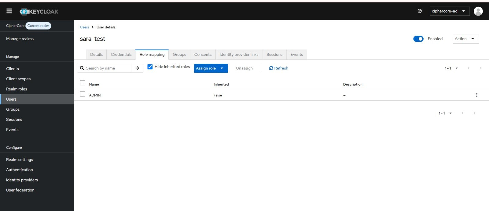
This Keycloak user-details view shows the ADMIN realm role assigned to the test user. It documents the identity-to-role mapping that the API later evaluates.
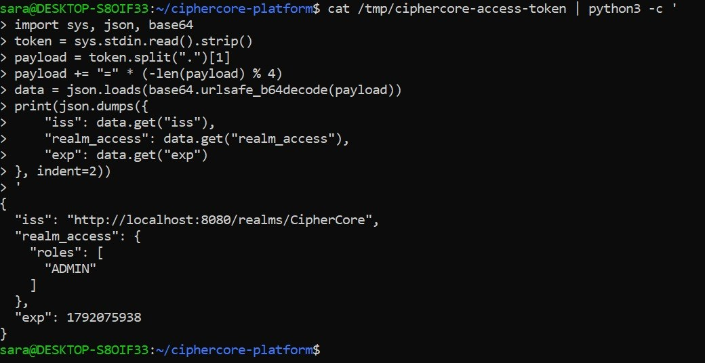
The decoded access-token payload shows the CipherCore realm issuer and ADMIN inside realm_access.roles. This connects the identity provider's role assignment to the claim consumed by the API; the bearer token itself is not displayed.
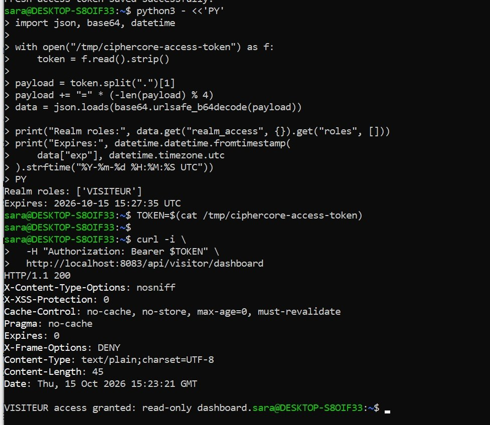
The terminal decodes a token containing VISITEUR, then calls /api/visitor/dashboard with that bearer token. HTTP 200 confirms the read-only visitor endpoint accepts the expected role.
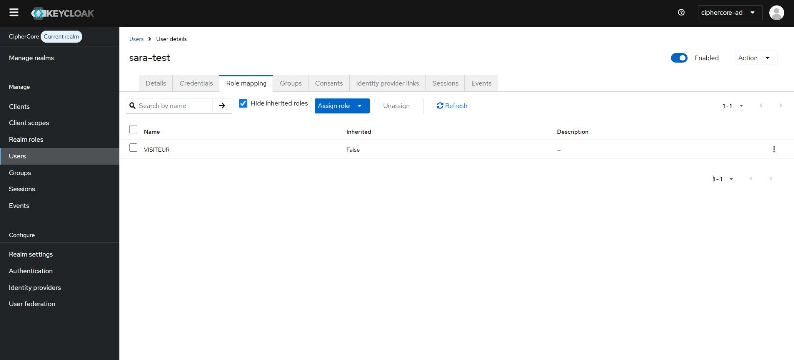
This user role-mapping view shows the VISITEUR realm role. The role is intended for read-only access and is also used to verify that lower-privilege users cannot enter the admin endpoint.
This user role-mapping view shows the EDITEUR realm role. The Spring Boot API checks this role before granting access to the editor dashboard.
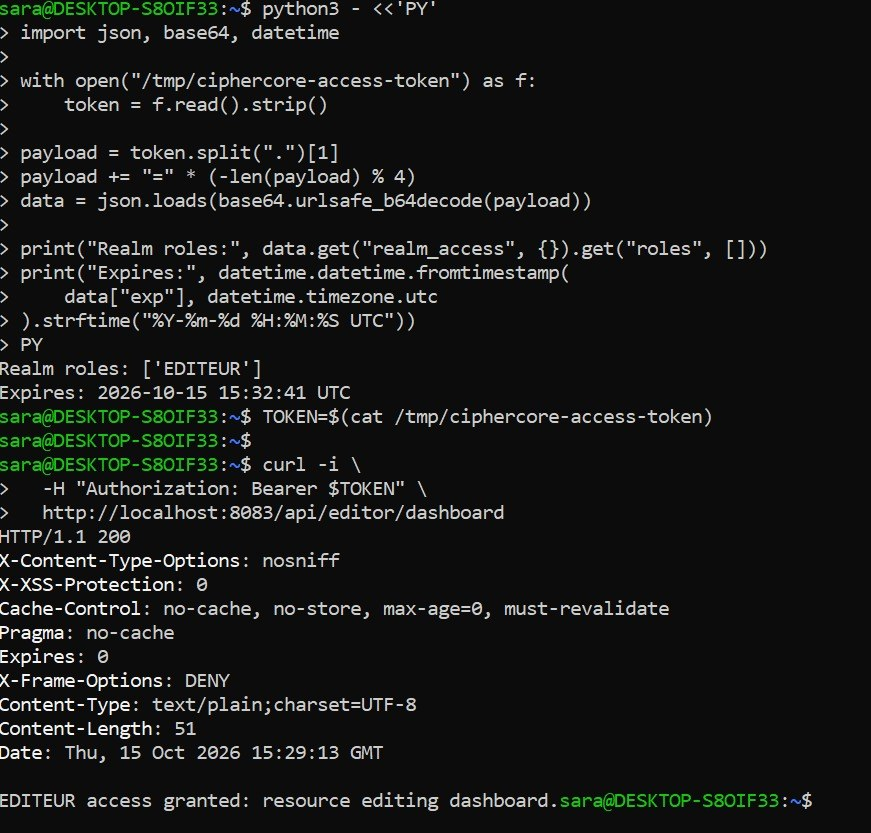
The terminal decodes an EDITEUR token and requests /api/editor/dashboard. HTTP 200 confirms that a user with the editor role can access the editing resource.
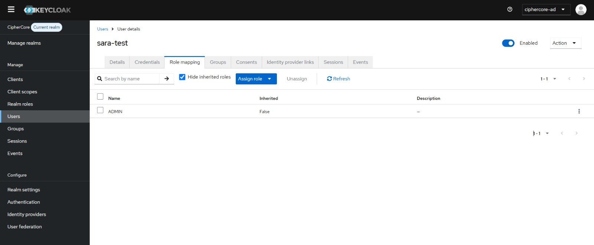
This second Keycloak role-mapping screenshot confirms the ADMIN assignment. Together with the JWT and successful admin request, it documents the path from user configuration to API authorization.
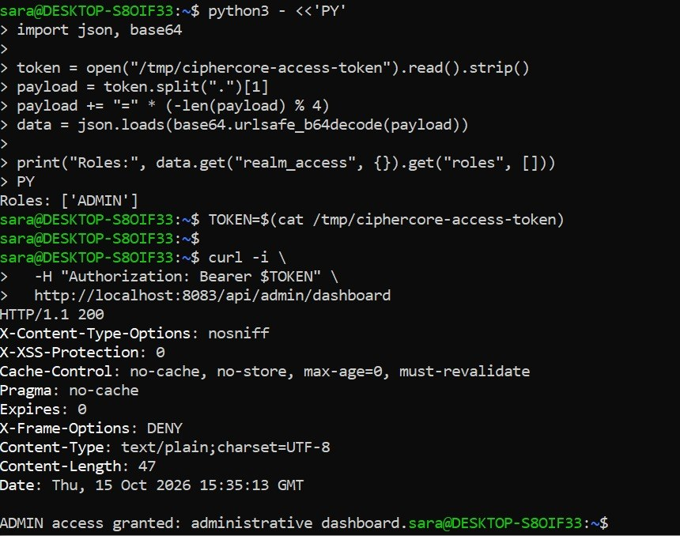
The terminal sends an ADMIN bearer token to /api/admin/dashboard and receives HTTP 200. This is the successful, authorized administrator scenario.
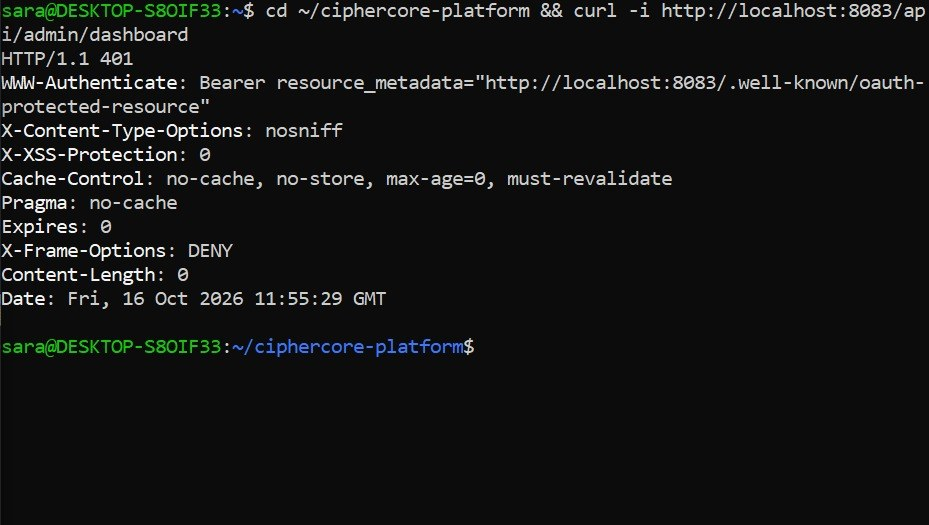
The admin endpoint is requested without an Authorization bearer token and responds with HTTP 401. This is the authentication failure case: the request has not supplied a valid access token.
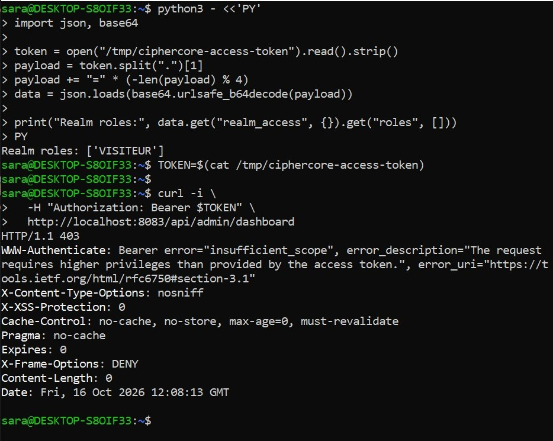
A token is present, but it does not contain the role required for the admin endpoint. HTTP 403 shows the difference between being unauthenticated (401) and authenticated without permission (403).
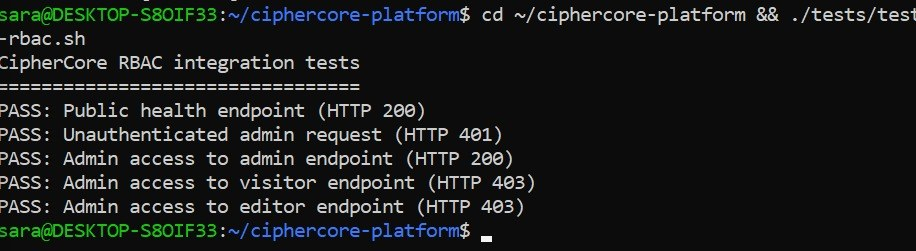
The test script reports five passing checks: public health returns 200, a tokenless admin request returns 401, ADMIN can access the admin endpoint, and ADMIN is denied visitor/editor endpoints. This makes the core authorization checks repeatable.
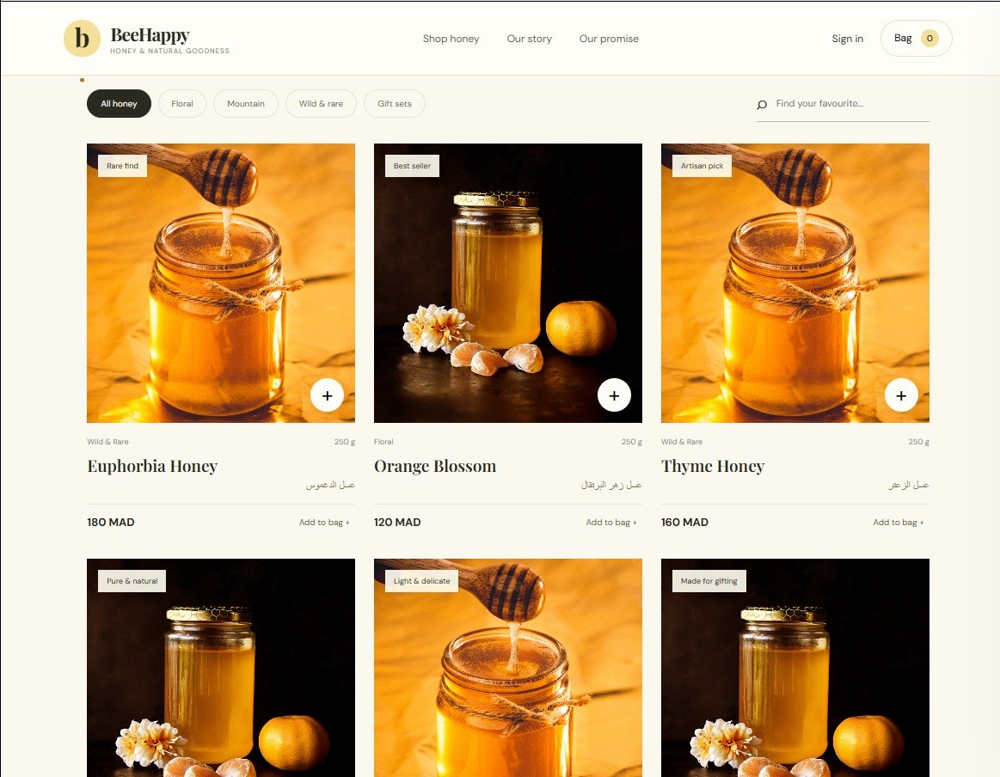
BeeHappy is the honey-storefront demo client, with product categories, product cards, and prices. It gives the IAM lab a second distinct application integrated with the same Keycloak identity provider.
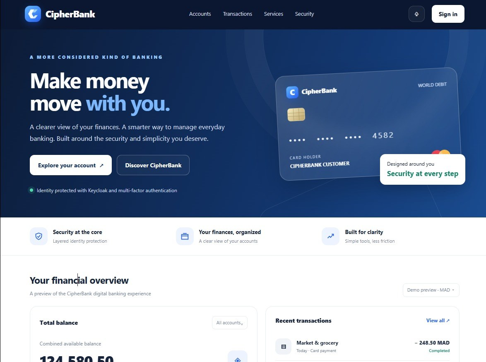
CipherBank is the banking-style demo client. Its sign-in entry point delegates authentication to Keycloak through OpenID Connect instead of managing a separate application password flow.
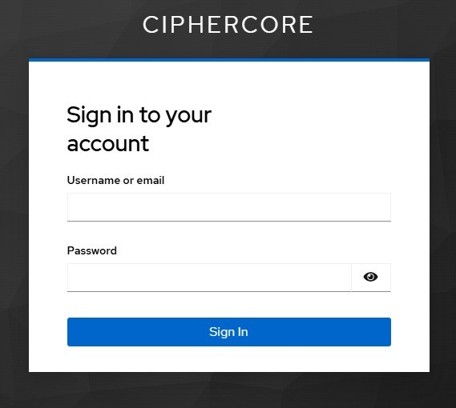
This is the initial Keycloak login screen opened from a client application. Credentials are entered at the identity provider, which returns the OIDC authentication result to the registered client callback.
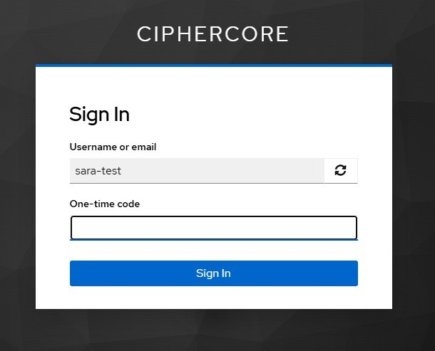
After the password step, Keycloak asks for a one-time code. This screenshot documents the configured multi-factor authentication challenge; no code has been entered or exposed.
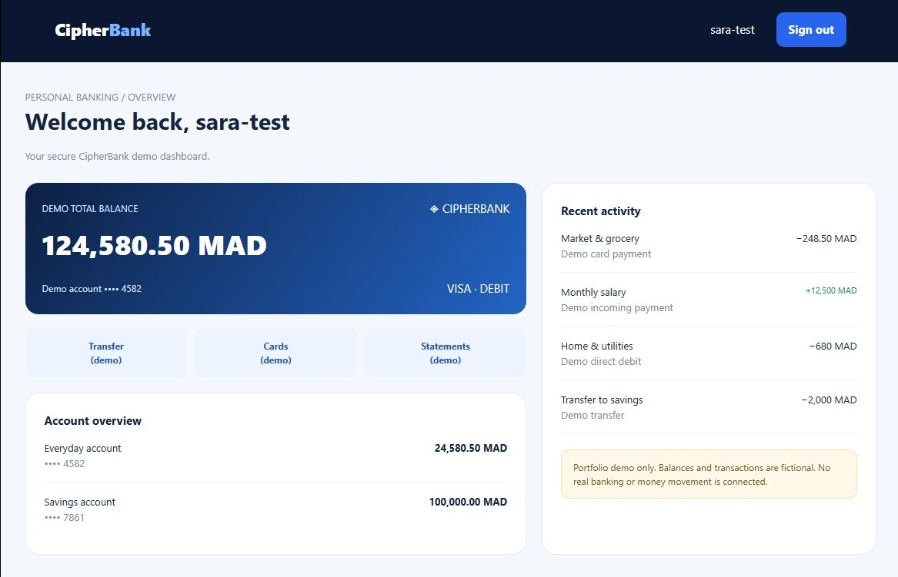
The CipherBank dashboard displays the signed-in test identity sara-test. The account balances and transactions are fictional demo data; this screenshot demonstrates the authenticated client session, not a real banking service.
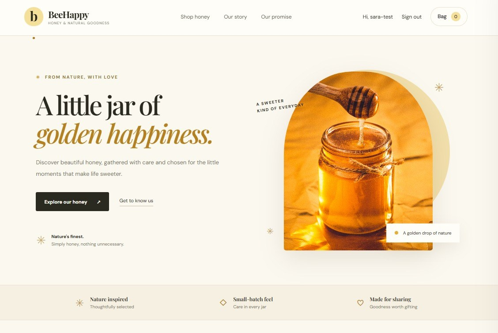
BeeHappy shows the same test identity as already signed in. In the demonstrated flow, after authentication through CipherBank, the second OIDC client reuses the active Keycloak browser session rather than asking for the password again. This illustrates cross-application SSO through the shared identity provider.
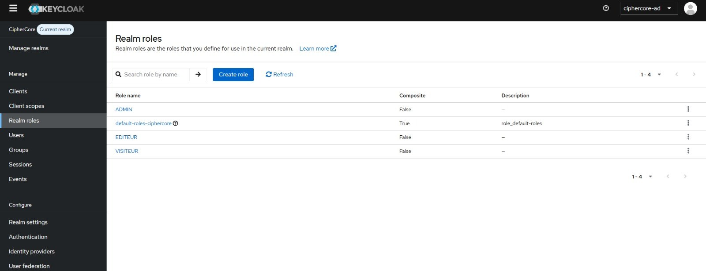
The realm roles screen lists ADMIN, EDITEUR, and VISITEUR. These realm roles are the authorization groups used by the Spring Boot API to separate administrative, editing, and read-only permissions.
Browse the PHP clients, Spring Boot API, Docker Compose configuration, tests, and evidence.
Source: github.com/lmaimounisara-cell/ciphercore-iam-platform. No cloud deployment is claimed.